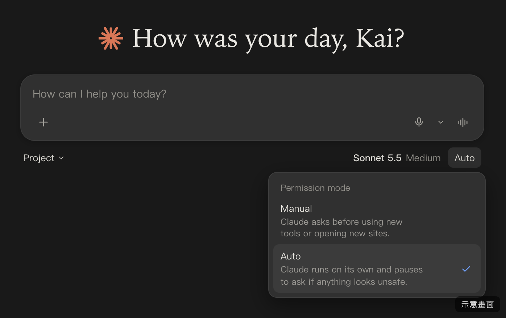
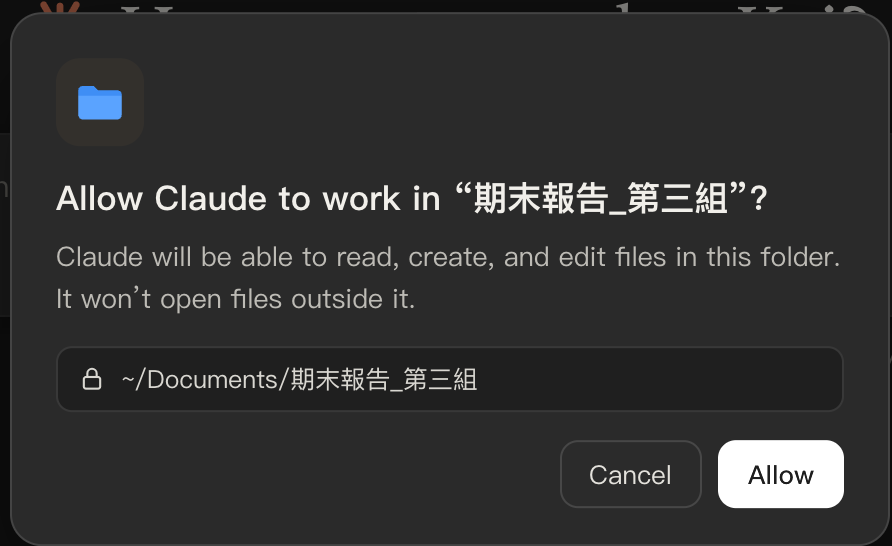
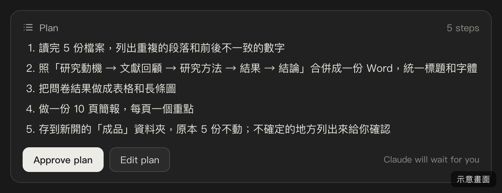
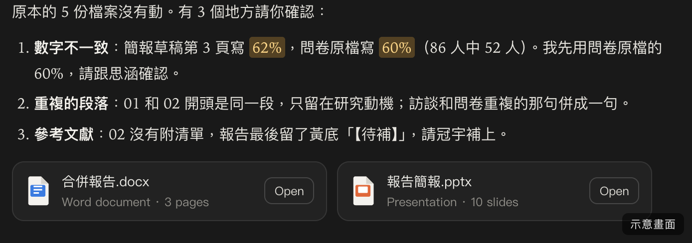

Cowork 入門：
交辦一件多步驟的工作
給有付費方案、會用 Claude 對話，但還沒交辦過長任務的學生和上班族。不需要寫程式。
想跳過原理、直接動手？翻到第 5 頁。
只想拿交辦句和驗收清單？翻到第 9–10 頁。
- 要什麼成品（幾份、什麼檔）
- 存在哪個資料夾
- 做到怎樣算完成
核心概念
Cowork 是什麼？
連接一個資料夾後，Claude 會自己做完一件多步驟的工作：讀檔、整理、產出 Word、Excel 或簡報，成品直接存回資料夾。它只讀寫你授權的資料夾。
把它想成：請一位助理到你的書桌
交代清楚要什麼、放哪裡、做到怎樣算完成，你就可以去忙。助理做到一半可能回來問你；做完之後，仍然要你驗收才算收下。
講清楚成品與完成標準，中途回答問題，最後驗收。
先提做法，再一步一步執行；不確定時回來問你。
只在這個資料夾裡讀寫，其他資料夾碰不到。
Word、Excel、簡報，存回資料夾，驗收後再使用。
差別在檔案由誰來搬
例子：把組員交來的 5 份檔案合併成一份報告，再做一份簡報。兩種做法 Claude 都做得出成品，差在中間的搬運。
- 你把 5 份檔案一份份上傳
- 成品要一份份下載
- 再自己存回正確的資料夾
- 它直接讀資料夾裡的 5 份檔案
- 自己合併、自己做簡報
- 成品直接存回你指定的位置
比的不是成品好壞，是檔案由誰來搬、成品放在哪。檔案越多、步驟越多，差距越大。
這段重點檔案誰搬，成品放哪
核心概念
Cowork 怎麼運作：四個步驟
本課建議每次交辦都走這四步。你負責交辦、確認、回答問題、驗收，中間的執行由它完成。
開始前要知道的三件事
你的畫面長這樣

新介面：訊息框上方沒有 Chat／Cowork 兩個選項，任何對話都能直接交辦。
權限模式：訊息框下方右側的 Auto，點開可選 Manual（使用新工具或開新網站前先問你）或 Auto（自己執行，看起來不安全時停下來問）。我們參考的帳號預設是 Auto，以你的帳號設定為準。
英文介面畫面。訊息框上還看得到 Chat／Cowork 兩個選項的是舊介面：先選 Cowork 再交辦，其他步驟相同。
這段重點交辦 → 計畫 → 執行 → 驗收
核心概念
什麼事適合交辦給 Cowork？
判斷標準：多檔案、多步驟、要做很久，最後要交出檔案的工作。只要一個快速答案，直接問就好。
適合交辦
- 檔案很多：5 份組員的稿、一整學期的講義、10 篇論文
- 步驟很多：先讀、再比對、再合併、再做成簡報
- 成品是檔案：Word、Excel、簡報
- 說得出完成標準：例如「簡報 10 頁」「每份稿都放進去」
直接在對話裡問就好
- 只要快速答案：解釋一個名詞、改一句話
- 還沒想清楚要什麼：先在對話裡討論，想清楚再交辦
- 只有你能判斷的事：報告的立場、要不要交出去
- 只想聽一句建議：例如「這個題目好不好」
例子
學習
- 組員的 5 份稿 → 一份合併好的報告＋10 頁簡報
- 一學期的講義 → 期末複習包（重點整理＋比較表＋自我測驗）
- 各科課程大綱 → 一張所有截止日的總表
工作
- 一個月的會議紀錄 → 待辦總表，依負責人分頁
- 各組交來的月報 → 部門月報＋摘要簡報
- 幾份市場資料 → 一份比較報告和摘要簡報
這段重點多檔案、多步驟、要做很久
實作流程 ① 連接資料夾
準備資料夾，連接到 Cowork
接下來四頁照同一個例子走：分組報告收尾。組員交來 5 份檔案，格式不一致、內容有重複，還有一處數字對不上，要合併成一份報告和一份簡報。
開始前，先確認三件事
- 有付費方案。Cowork 只有付費方案才有，方案差異詳見 1-3。
- 用 Claude 桌面 app。要讓它直接讀寫電腦裡的檔案，要用桌面 app（Mac、Windows 都有）。網頁版可以上傳檔案，但不能連接本機資料夾。
- 第一次用複本或小資料夾。把這次要用的 3–5 份檔案複製到一個新資料夾，原檔留在別處。不要直接連接整個「文件」或「桌面」。組員的稿在雲端文件或 LINE 上，先下載成檔案放進來。
示範用檔案：內容虛構、人名為假名、問卷是示範數據。標籤是為了讓你看懂例子，實際檔案上沒有。
連接資料夾
- 在桌面 app 開一個新對話（舊介面先在訊息框選「Cowork」）。
- 在訊息框附近找連接資料夾的選項（位置與名稱以你的畫面為準），選剛才的「期末報告_第三組」。
- 若出現存取授權的提示，看清楚路徑是對的資料夾，再允許。
- 連好後先問一句「請列出你讀得到的檔名」，確認 5 份都在。

示意畫面右圖是授權提示的示意畫面：問你要不要讓 Claude 在「期末報告_第三組」裡讀取、建立、修改檔案，並列出資料夾路徑。實際字樣與位置以你的畫面為準。
這段重點第一次用複本，原檔留在別處
實作流程 ② 交辦
講清楚三要素，再加一句「標出不確定」
交辦寫得清不清楚，決定交回來的成品對不對。每次都講這三件，再請它把不確定的地方標出來。
這個資料夾裡是我們這組期末報告的 5 份檔案，組員各自寫的，格式不一樣，有些內容重複。
請做兩份成品，存到這個資料夾裡新開的「成品」資料夾：
1. 一份合併好的報告 Word：統一標題與內文格式，重複的內容只留一次，章節照「研究動機 → 文獻回顧 → 研究方法 → 結果 → 結論」排。
2. 一份 10 頁的報告簡報：每頁一個重點，問卷數字做成圖表。
做完的標準：5 份檔案的內容都放進去、沒有重複段落、簡報 10 頁。
不確定的地方標出來：數字前後對不上的，先以原始資料為準，並列出兩邊的出處給我確認；檔案裡沒有的寫「待補」，不要自己編。
不要改動原本的 5 份檔案。動手前先告訴我你打算怎麼做，我確認後再開始。
這段重點成品、位置、標準＋標出不確定
實作流程 ③ 看計畫
先看它的計畫，再放手
交辦最後那句「動手前先告訴我」，是請 Claude 先列出做法、等你回覆。花 30 秒看一遍，比做完才發現方向錯了省時間。

示意畫面：Claude 讀完 5 份檔後列出 5 步計畫，等你確認。圖中的 Approve plan（確認）、Edit plan（修改）按鈕是示意，你的畫面可能沒有；最穩的做法是直接在對話回覆「計畫可以，請開始」。
看這三點
要改就直接說
第 4 步改一下：簡報最後一頁改成分工頁，寫誰負責哪一章，總共還是 10 頁。其他照你的計畫，開始吧。
執行中：它可能回來問你
確認後它就會自己做，畫面上看得到進行到哪一步。你可以去忙；用到本機檔案時，桌面 app 不要關。遇到判斷不了的事，它可能停下來問你，例如兩份檔案的數字不一樣要用哪一個；回來時先看有沒有等你回覆的問題。
第一次交辦、檔案很重要時，可以把權限模式切成 Manual，讓它使用新工具前都先問你。中途想改方向，直接在同一個對話輸入。
這段重點花 30 秒看計畫
實作流程 ④ 驗收
打開檔案核對，不對就要它改
它說做完了，不代表做對了。它不一定發現所有問題，所以要打開檔案，照你寫的標準核對來源、遺漏、數字。

教學用的完成回報範例（擬真示意畫面）：報告和簡報存進「成品」資料夾。因為交辦時要求「不確定的地方標出來」，它列了 3 件請你確認的事：簡報草稿寫 62%、問卷原檔寫 60%；重複段落怎麼處理；參考文獻缺少、留了「待補」。
但它不一定發現所有問題。沒列出來的地方，仍然要你自己核對。
打開成品，核對三件事
- 來源：抽兩段回原檔確認出處
- 遺漏：5 份都在，刪掉的真的是重複
- 數字：抽兩個回原檔對；衝突由你決定
- 簡報頁數、「待補」；原檔沒被改
- 補改後再開檔，確認改到了、其他處沒動
請對照我一開始寫的「做完的標準」，一條一條說明有沒有做到；另外列出你合併時刪掉的段落和改過的數字，先不要改。（它的自我檢查只是幫你找問題，不能取代你核對。）
補改：講清楚哪裡、改成怎樣、其他不要動
簡報第 3 頁字太多，改成 3 個重點。其他頁不要動。
「文獻回顧」最後那段「認知外包」不是重複內容，請放回那章最後。其他地方不要動。
60% 跟思涵確認過是對的，維持 60%。請再檢查報告和簡報裡還有沒有其他數字跟原檔不同，列出來給我。
這段重點核對來源、遺漏、數字
交辦句與驗收清單
交辦三要素小卡＋驗收清單
交辦前看小卡，收到成品後照清單核對。兩張都可以截圖存在手機裡。
- 成品：要幾份、什麼檔、多長（例：一份 Word＋一份 10 頁簡報）
- 位置：存進哪個資料夾（例：新開「成品」資料夾，跟原檔分開）
- 完成標準：驗收時一條條核對的標準（例：每份稿都放進去、沒有重複）
這個資料夾裡是＿＿＿＿（資料是什麼）。
請做＿＿＿＿（成品：幾份、什麼檔、多長），存到＿＿＿＿（資料夾）。
做完的標準：＿＿＿＿、＿＿＿＿、＿＿＿＿。
不確定的地方標出來，不要自己猜。不要改動原本的檔案。
動手前先告訴我你打算怎麼做，我確認後再開始。
驗收清單
來源
- 抽兩段內容回原檔確認出處
- 沒有資料裡不存在的內容
遺漏
- 每份檔案的內容都在
- 刪掉的段落真的是重複
數字
- 抽兩個數字回原檔對
- 它標出的衝突由你決定
完成標準與原檔
- 交辦時寫的標準逐條做到
- 原檔仍在、沒有被改
任務太大、一次交辦不清楚時，下一課 5-2 教你拆成幾步分批交辦。
這段重點交辦看小卡，驗收看清單
交辦句與驗收清單
5 句常用交辦句：學生 3 句、上班族 2 句
先把資料放進一個資料夾並連接，再貼上對應的句子。底線的地方換成你的。
這個資料夾是組員各自寫的報告檔。請合併成一份 Word 報告，章節照研究動機、文獻回顧、研究方法、結果、結論排，統一格式、重複只留一次；再做一份 10 頁簡報。存到「成品」資料夾。標準：每份稿的內容都放進去、沒有重複段落。不確定的地方標出來：數字對不上的以原始資料為準並列出兩邊出處給我確認，檔案裡沒有的寫「待補」。不要改原檔。動手前先告訴我計畫，我確認後再開始。
這個資料夾是這學期的講義。請做期末複習包，存到「複習包」資料夾：每章一頁重點整理（Word）、一張各章比較表（Excel）、20 題自我測驗附答案（Word）。標準：每章都有、內容只來自講義、每題標出處頁碼。講義看不清楚或互相矛盾的地方標出來。動手前先告訴我計畫，我確認後再開始。
這個資料夾有各科的課程大綱。請整理成一份 Excel，存在這個資料夾：第一個工作表是課表，第二個工作表是所有作業和考試的截止日，依日期排序，標科目和配分。標準：每科都有、日期格式一致。大綱沒寫日期的標「未寫」，日期寫法看不懂的標出來。動手前先告訴我計畫，我確認後再開始。
這個資料夾是這個月的會議紀錄。請整理成一份待辦總表 Excel，存在「待辦」資料夾：每個負責人一個工作表，欄位是待辦事項、出自哪次會議、期限、狀態。標準：每份紀錄都看過、同一件事只列一次。沒寫期限的標「未定」，負責人不明確的標出來。不要改原本的紀錄。動手前先告訴我計畫，我確認後再開始。
這個資料夾有各組交來的月報和數字表。請彙整成一份部門月報 Word，再做一份 5 頁摘要簡報，都存到「月報」資料夾。標準：每組都有、數字跟原表一致、寫出跟上個月比的增減。各組數字互相矛盾的列出出處，表裡沒有的寫「待補」，不要估。動手前先告訴我計畫，我確認後再開始。
這段重點放好資料夾，貼上就能交辦
疑難排解
常見問題
做到這三件，就學會了
- 連接一個資料夾，交辦一件多步驟的工作
- 看過它的計畫、確認後才讓它執行
- 核對來源、遺漏、數字，至少要它補改一次
課後測驗
下面哪一段交辦，最可能拿回你要的成品？
- 幫我整理這個資料夾的報告。
- 把這 5 份檔合併成一份 Word，存到「成品」資料夾，每份稿都放進去、不要重複；數字對不上的標出來；動手前先告訴我計畫，我確認後再開始。
- 幫我把報告弄得好一點，越快越好。
這段重點卡住就回來翻這頁
延伸
你已經會交辦了
接下來，挑一件這週真的要做、而且要碰很多檔案的事，用第 9 頁的小卡交辦一次，再照驗收清單核對。
有些事一次交代不清楚，例如整份畢業專題。下一課教你把大任務拆成幾段，一段一段交辦、驗收。
你交給 Cowork 做了什麼。
追蹤 Paradigm AI（@paradigmai_tw），我們一起把 AI 學起來。
官方說明
- Get started with Claude Cowork｜support.claude.com/en/articles/13345190
- Claude Cowork and chat are one Claude｜support.claude.com/en/articles/16761823
介面說明依 2026 年 11 月的 Claude 說明中心與網頁版介面觀察；畫面皆為擬真示意，介面可能隨更新改變。課號（1-3、5-2）是 Paradigm AI 課程地圖的編號。示範用檔案的內容、人名、數字都是虛構的。
這段重點Paradigm AI